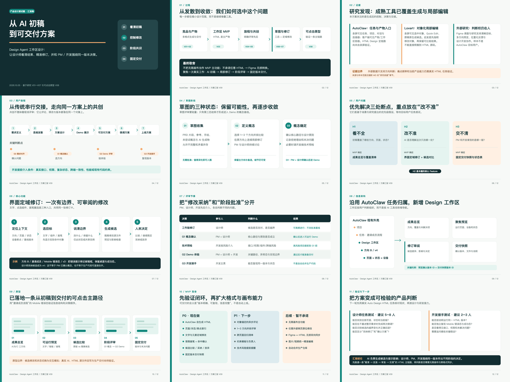

Design Agent · Case Study
从 AI 生成的 HTML 初稿，到可评审、可交付的设计成果
本资料包围绕一个设计测试题：设计师如何查看 Agent 产物、进行精准微调、管理不同格式文件，并把确认过的同一版本交给 PM 与前端。可先看汇报，再查看功能架构和可点击原型。
当前成果
汇报、架构与原型各有独立入口，也保留原始可编辑文件。
推荐阅读路径
约 15 分钟理解结论，再按需回查证据。
01 · V09 看设计命题与取舍
02 · V10 看功能及信息结构
03 · V08 操作关键链路
04 · V01–V07 查研究过程
过程资料
按版本保留推导，不用旧稿替代当前方案。
本资料中的 AI 修改、源码回写和交付包在原型中均为交互模拟。Figma 源稿仍是外部文件，链接与访问权限由 Figma 管理。此站点用于方案预览，不代表 AutoClaw 当前产品功能。